Topologische Operatoren
Die topologischen Operatoren sind Bestandteile der räumlichen Analysefunktionen eines GIS und dementsprechend grundlegend. Diese sind in den kommerziellen GIS wie ArcView, ArcInfo, Geomedia, MapInfo u. a. aber auch in den Open Source Paketen wie QGIS implementiert. Jedes System verfügt über eine eigene Formulierung der topologischen Abfragen; einige davon erlauben es, die topologischen Abfragen mittels SQL auszuführen. Geographische Datenbanken („spatial databases“) wie z.B. Oracle werden laufend weiterentwickelt und stellen solche Werkzeuge für die Datenverwaltung und ihre Funktionalitäten den GIS zur Verfügung. Sie implementieren weitere topologische Operatoren aus dem GIS-Bereich, welche effizient auf die entsprechende Datenstruktur anwendbar sind. Die folgende Tabelle listet einige Funktionen auf sowie den entsprechenden Operator, der von Geomedia, Oracle Spatial, ArcGIS und QGIS angeboten wird.
| TOPOLOGISCHE BEZIEHUNG | ORACLE | GEOMEDIA | ARCVIEW | QGIS |
|---|---|---|---|---|
| Disjoint | disjoint | - | are within a distance of | außerhalb |
| Meet | touch | meet | - | berührt |
| Overlap | overlap by intersect | overlap | intersect | überlappt |
| Contains | contains | entirely contains | completely contains | enthält |
| Inside | covers | are entirely contained by | contains the center of | innerhalb |
| Covers | inside | contain | have their center in | innerhalb |
| Coverered by | coveredby | are contained by | are completely within | innerhalb |
| Equal | equal | are spatially equal | - | gleich |
Topologische Kommandosyntax in ArcMap
SelectLayerByLocation_management <in_layer> {INTERSECT | WITHIN_A_DISTANCE | COMPLETELY_CONTAINS | COMPLETELY_WITHIN | HAVE_THEIR_CENTER_IN | SHARE_A_LINE_SEGMENT_WITH | BOUNDARY_TOUCHES | ARE_IDENTICAL_TO | CROSSED_BY_THE_OUTLINE_OF | CONTAINS | CONTAINED_BY} {select_features} {search_distance} {NEW_SELECTION | ADD_TO_SELECTION | REMOVE_FROM_SELECTION | SUBSET_SELECTION | SWITCH_SELECTION}
Beispiel: SelectLayerByLocation seen WITHIN_A_DISTANCE TibetOrte
100 NEW_SELECTION
Topologische Beziehungen
Die wichtigsten topologischen
Beziehungen zwischen Geoobjekten, die im GIS-Bereich genutzt werden, sind in der
Folge aufgelistet. Dabei ist zu beachten, dass grundsätzlich alle drei
Geometrietypen (Punkt, Linie und Fläche) des Vektordatenmodells berücksichtigt
werden.
Disjunkt (Disjoint): Objekt A und Objekt B weisen keine Schnittfläche
auf. Test auf Getrenntheit (Disjoint) der Ausgangsgeometrie und
einer anderen Geometrie.
Meet: Objekt A und
Objekt B berühren sich an den Grenzlinien. Test auf Berührung
(Touch) der Ausgangsgeometrie und einer anderen Geometrie. Die Ränder schneiden
sich, nicht aber das Innere der beiden Geometrien. Zwei Geometrien berühren
sich, wenn sich nur die Ränder schneiden.
Overlap: Objekt A
und Objekt B überschneiden sich. Test auf Überschneidung
(Intersect) der Ausgangsgeometrie und einer anderen Geometrie (Umkehrung von
Disjunkt).
Überlappung mit Getrenntheit: Das Innere
eines Objekts schneidet den Rand und das Innere des anderen Objekts, die beiden
Ränder schneiden sich aber nicht. Das ist der Fall, z. B. wenn eine Linie
außerhalb eines Polygons (Fläche) beginnt und im Inneren des Polygons endet.
Überlappung mit Überschneidung: Die Ränder
sowie das Innere der beiden Objekte schneiden sich. Wenn eine Geometrie eine
andere schneiden soll, so muss die Geometrie des Schnittes einer kleineren
Dimension in der größeren vorhanden sein; d. h.:
- Punkte
- Können keine Punkte, Linien oder Flächen schneiden. - Linien
- Können keine Punkte schneiden.
- Können weitere Linien schneiden » Schnitt = Punkte.
- Können Polygonen schneiden » Schnitt = Linien (Punkte).
Contains: Objekt A enthält Objekt B. Test, ob die Ausgangsgeometrie eine andere Geometrie umschließt (Contains). Das Innere und der Rand eines Objekts sind vollständig im Inneren eines anderen Objekts enthalten. Eine Geometrie kann keine Geometrie höherer Ordnung (Dimension) enthalten; d. h.:
- Punkte können keine Linien oder Fläche enthalten.
- Linien können keine Fläche enthalten.
Inside: Objekt B
liegt innerhalb Objekt A. Das Gegenteil zu „enthalten“. Wenn A
innerhalb B liegt, so enthält B A.
Covers: Objekt A
deckt Objekt B. Das Innere eines Objekts liegt vollständig im
Inneren des anderen Objekts, und die Ränder schneiden sich. Eine Geometrie kann
keine Geometrie höherer Ordnung (Dimension) enthalten; d. h.:
- Punkte können keine Linien oder Flächen enthalten.
- Linien können keine Fläche enthalten.
Covered by: Objekt
B ist von Objekt A bedeckt. Das Gegenteil zu „decken“. Wenn A
von B gedeckt ist, so deckt B A.
Equal: Objekt B
und Objekt A stimmen überein. Test auf Gleichheit (Equals) der
Ausgangsgeometrie und einer anderen Geometrie. Das Innere und der Rand eines
Objekts liegen auf dem Rand des zweiten Objekts (und das zweite bedeckt das
erste Objekt). Diese Beziehung besteht z. B., wenn eine Linie genau auf den Rand
einer Fläche fällt. Die Koordinaten aller einzelnen Bestandpunkte müssen gleich
sein. Die verglichenen Geometrien müssen ebenfalls gleich sein; d. h.:
- Punkte = Punkte
- Linien = Linien
- Polygone = Polygone
Sie können die topologischen Beziehungen anhand der folgenden Tabelle nachvollziehen. Die Auflistung zeigt die am häufigsten vorkommenden topologischen Beziehungen:
| poly-poly | line-line | point-point | poly-line | poly-point | line-point | |
|---|---|---|---|---|---|---|
| Disjoint | 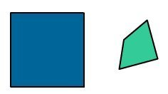 |
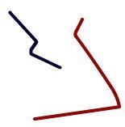 |
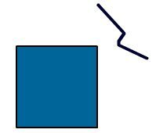 |
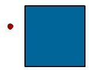 |
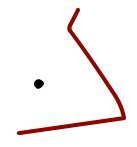 |
|
| Meet | 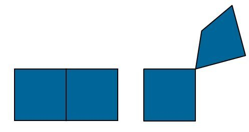 |
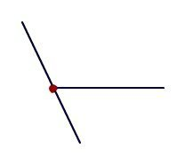 |
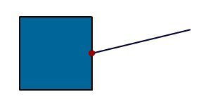 |
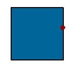 |
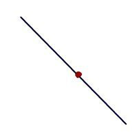 |
|
| Overlap | 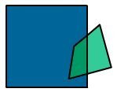 |
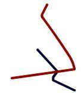 |
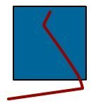 |
|||
| Contains | 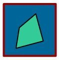 |
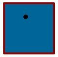 |
||||
| Inside | 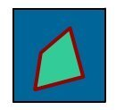 |
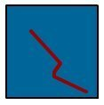 |
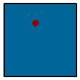 |
|||
| Covers | 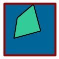 |
|||||
| Covered by | 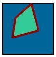 |
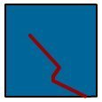 |
||||
| Equal | 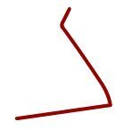 |
Die Beziehungen zwischen Flächenobjekten und anderen Objekten kommen am häufigsten vor. Nachfolgend einige mögliche topologische Abfragen in diesem Zusammenhang.
| Ebene 1 | Ebene 2 | Input | Abfrage | Resultat Tabelle | Resultat Geometrie |
|---|---|---|---|---|---|
 |
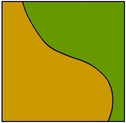 |
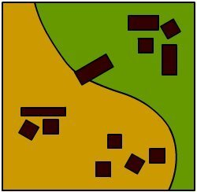 |
Suche die Gebäude, die vollständig im Wald liegen. | 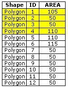 |
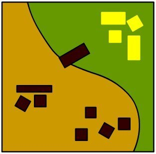 |
|
Suche die Gebäude, die den Waldrand schneiden. | 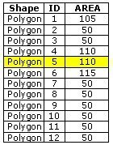 |
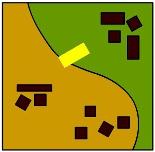 |
||
|
Suche die Gebäude, die ihren Schwerpunkt im Wald haben. | 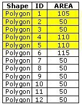 |
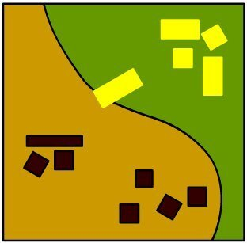 |
Bearbeiten Sie...
- Versuchen Sie zu identifizieren welche der topologischen Operatoren Elemente der logischen und vergleichenden/arithmetischen Operatoren beinhalten